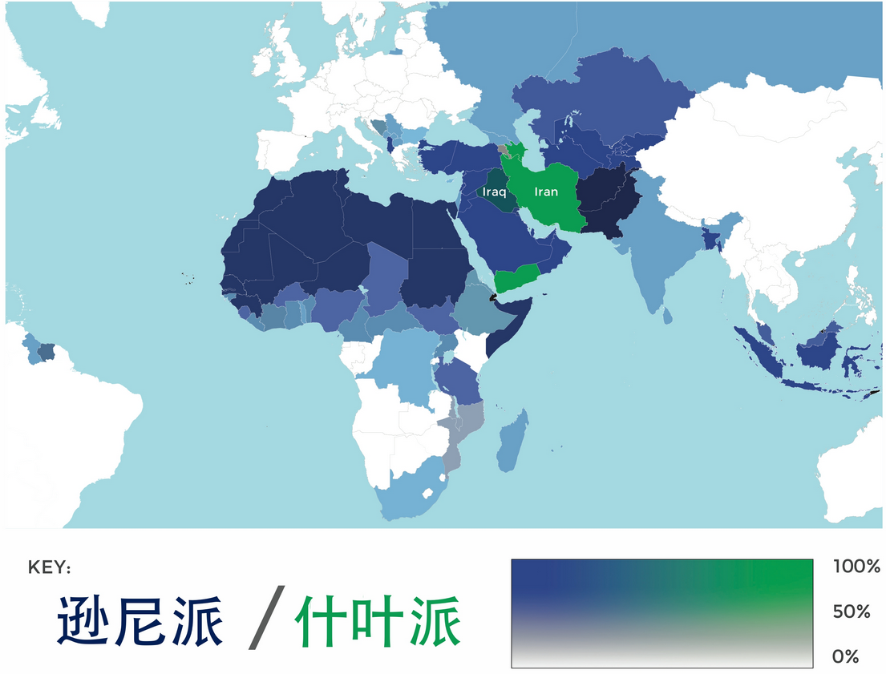
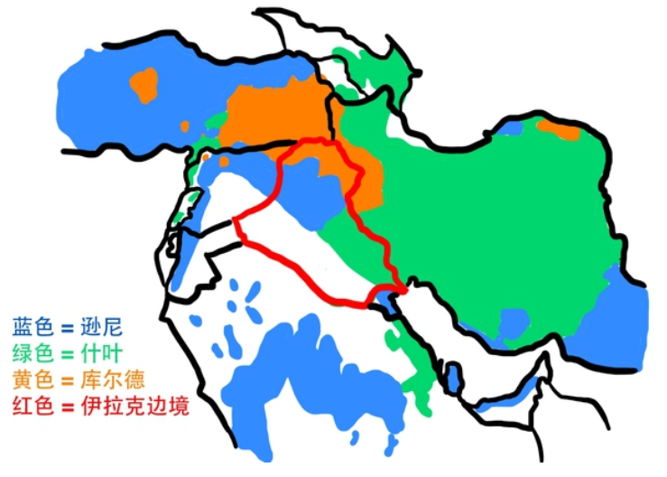
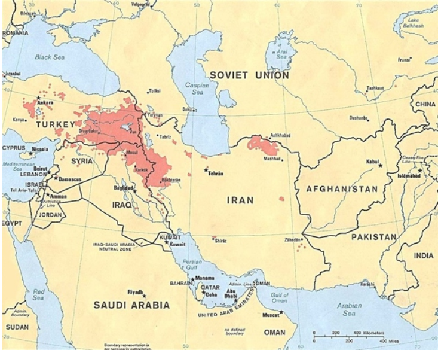
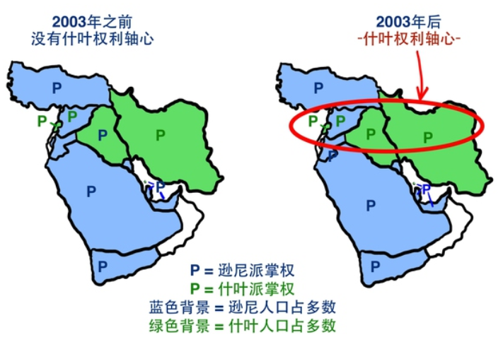
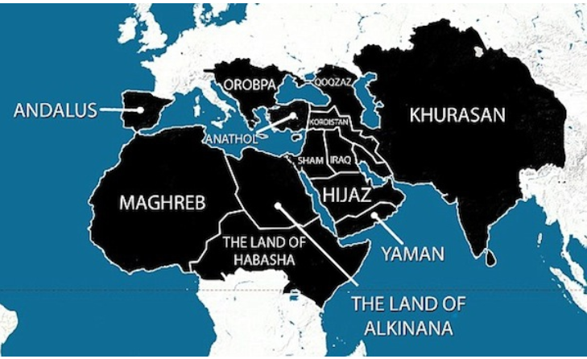

继去年巴黎恐怖袭击后，ISIS近日又对比利时发动了连环爆炸袭击，其所做所为着实另人发指！这些天通过阅读一些相关文章并搜集其中的重要信息之后，我开始写下这篇文章来和大家一起了解一下ISIS这货到底是个什么鬼！
本文目录：
-引言
继去年巴黎恐怖袭击后，ISIS近日又对比利时发动了连环爆炸袭击，其所做所为着实另人发指！在哀悼遇难者并祈求世界和平的同时，特别想知道ISIS到底是个啥样的恐怖组织，以至于其如此热衷于伤害无辜的平民！这些天通过阅读一些相关文章并搜集其中的重要信息之后，我开始写下这篇文章来和大家一起了解一下ISIS这货到底是个什么鬼！
-了解伊斯兰世界
–伊斯兰教的创立
让我们从伊斯兰教的创始人默罕默德开始说起。公元570年，在麦加，一个全名是：Abū al-Qāsim Muḥammad ibn ʿAbd Allāh ibn ʿAbd al-Muṭṭalib ibn Hāshim的孩子出生了，他就是传说中的默罕默德。他的父母都在他年幼的时候相继去世，只能和自己的商人叔叔生活在一起，于是在叔叔的教导下，他也成为了一个商人。默罕默德40岁之前的人生并没有什么特别的，结婚，生子，一共曾经有过四个女儿两个儿子，但是能活到成年的只有一个女儿Fatimah。
当他年过40，开始养成了每年去山上独处几周的习惯。在这几周中他会冥想，祈祷。610年的那一次独自远行中，默罕默德第一次和大天使加百利“会面”。根据记载，加百利带给默罕默德上帝的旨意，这些旨意被默罕默德记在心中。在之后的几年中，每年加百利都会给默罕默德捎上帝的信，默罕默德也继续记在心里。默罕默德一直把这些旨意都憋在心里，之后他把他们背诵给了自己的追随者，这些追随者写下了这些旨意，后来演变成了现在的《古兰经》。
加百利邂逅默罕默德三年之后，也就是613年，默罕默德开始在自己家乡麦加传教。但是结果并不好，因为当时麦加是一个多信仰的城市，大家信什么的都有（基本上都是比如河神，太阳神，雨神这种自然神）。默罕默德的宣传的一条，就是世界上只有一个上帝，你们这些渣渣信仰的神祗都应该被砸碎。这种极端受到了大多数人的抵制，尤其是当默罕默德的影响力开始增加的的时候。抵制者杀了很多默罕默德的信徒，而且要不是默罕默德家室显赫，也把默罕默德杀了。622年，默罕默德得到小道消息，说抵制者正在密谋谋杀他，于是带着自己的信徒逃跑到麦加附近的城市麦地那。这段长征在穆斯林历史中成为Hijra，意为大逃亡，每个穆斯林新年的第一天都会庆祝，而这一年也是伊斯兰教历法的元年。
随后的八年中，默罕默德和他的信徒都在抵抗来自麦加企图毁灭他们的攻击，而且对于所有伊斯兰教有威胁，或者拒绝信仰伊斯兰教的人都非常凶残。很多人不知道的是，默罕默德除了是一个精神领袖，本质上来说更是一个信徒军队的将军，和一个能够在敌对势力中保全自己领导地位的策略家。随着麦加人势力减弱，默罕默德的势力的增长，麦加人对穆斯林发动了大规模进攻，并且击败了穆斯林们。但是五年之后默罕默德带着10万人大军卷土重来，碾压一般地永远征服了麦加。632年默罕默德去世的时候，伊斯兰教已经传遍了整个阿拉伯半岛。
–伊斯兰世界的分裂
新的穆斯林们在默罕默德死后享受了20年的统一，但是好景不长，他们的统一马上就结束了，而且永远的结束了。
默罕默德没有儿子，而且在他死前没有指定任何一个继承人，于是伊斯兰教内部为了解决继承人问题产生了分歧，主要有以下两波人：
有一波穆斯林(Team A)认为默罕默德希望由一个“穆斯林精英大会”（类似议会）来决定穆斯林世界的领袖：哈里发（伊斯兰教主）。如果这个哈里发死了，他们就会重新选定一个新的哈里发。他们觉得第一个哈里发应该是默罕默德一个妻子的父亲，阿布·伯克尔（我们暂且叫他阿布）。
另一波穆斯林(Team B)表示不同意。他们认为穆罕默德应该觉得，在他之后还是只有上帝才能指派穆斯林世界的领袖，所以这些领袖应该一直在默罕默德家族内。对他们来说，所有的情况都表明默罕默德的表亲，也是他女儿Fatimah的丈夫，Ali ibn Abi Talib应该继承王位（我们管他叫阿里）。
结果是A组人多势众赢得了这场争论。所以默罕默德的老丈人阿布被拥立成为第一个哈里发。与此同时女婿阿里只能和B组穆斯林气的干瞪眼。两年之后阿布生病去世，默罕默德的另一个朋友，乌马尔，掌握了政权，因为他被阿布指派为下一个领袖。乌马尔执政10年，征服了波斯人，但是却被波斯人刺杀。幸好阿布也指派了乌马尔的继承人，奥斯曼。然后奥斯曼执政12年也被刺杀掉了。与此同时，B组还在干瞪眼看着。但是这时候，穆斯林精英大会决定，下一个哈里发应该是阿里，也就是B组刚开始欲立的继承人。这个决定皆大欢喜，大家弹冠相庆。
B组始终觉得，穆斯林的领袖不是简简单单被选举出来的人，而是上帝决定的，所以他们把教长称之为伊玛目（类似哈里发），也就是说经过三任短命的哈里发之后，他们的阿里终于成为了第一个伊玛目。然后是阿里的儿子哈桑，算作第二个伊玛目。但是很快就被当时的叙利亚总督穆阿维耶领导的叛乱推翻 ，穆阿维耶成了了第六任教主哈里发，但是B组肯定不服气不承认穆阿维耶的合法性，开始支持阿里的小儿子侯赛因，作为他们第三个伊玛目。但是侯赛因，也就是B组的第三个伊玛目，被穆阿维耶的继承人耶齐德砍了头。从侯赛因死的那天起，伊斯兰世界从此分道扬镳，双方结下了万世的仇恨。
A组穆斯林叫逊尼派，B组叫什叶派。
这些事情都发生在1300多年前，而今天的伊斯兰世界还是因为这件事而互不买账。今天中东大多数的争端都是围绕着这个古老的分裂。今天逊尼-什叶的争端有很多原因，但是问题的核心还是7世纪发生的那些事情。逊尼派相信他们的哈里发不是上帝选定的。而什叶派穆斯林拒绝接受这种异端，并且觉得应该支持从阿里开始的伊玛目。两派都同意默罕默德是最早的先知，也都相信穆斯林五项基柱（或称五功），也都把《古兰经》当做他们的圣书。
–当今伊斯兰世界主要分布
我们来看看下面这张示意图：

图中颜色的深浅表示的是这个国家穆斯林所占的人口比重，而颜色的蓝绿则用来区分穆斯林的派别。可以一目了然地看出，逊尼派的国家占绝大多数，逊尼派国家的老大以前是埃及，现在是沙特，土耳其一直也在觊觎，什叶派的国家占了很少数，其老大当之无愧是伊朗。接下来提一下两个比较特殊的国家，一个是伊拉克，一个是叙利亚。伊拉克，什叶派人数占优，但是之前的萨达姆是逊尼派，2003年伊战以后才由什叶派开始掌权。而叙利亚则正好相反，需拟派人数占优但是掌权的阿萨德所在的阿拉维派属于什叶派，这也就不难理解这两个地方总是矛盾的聚集点了吧。
-浅析中东格局及其发展历程
让我们从矛盾最突出的国家伊拉克说起，伊拉克所在的土地是底格里斯河和幼发拉底河之间的肥沃区域，土地有个很美的名字叫做美索不达米亚。这里被认为是书写的起源地，并且发明了轮子，一些早期的船，历法，地图，学校，还有一小时60分钟一分钟60秒。后来亚历山大大帝征服了半个世界之后，因为巴比伦丰腴的土地和欧亚之间的地理位置，选择在这里定都。再后来阿巴斯王朝的领导人在同一片土地上建立了巴格达，从此以后的500年（一直到蒙古人跑过来踏平了巴格达），巴格达都扮演着世界文化和商业中心，和世界上最大的城市，伊拉克或许是世界上历史最丰富的地方。
直到20世纪初，伊拉克的土地已经作为奥斯曼帝国的一部分长达400年了。这片土地上有几个宗教和民族团体，但是基本都处于自治状态。第一次世界大战爆发，德国和同盟国对阵法英俄，奥斯曼帝国却站错了队，和同盟国最后一起落了个失败的命运。于是奥斯曼帝国被英法用铅笔和尺子分割，精确的国界被划定下来，于是诞生了今天的伊拉克，土耳其，叙利亚，约旦，黎巴嫩，科威特。从此伊拉克就成为了一个多民族宗教争端的国家，从下图可以看出其国境内有多股不同民族不同宗教信仰的人群生活在一起。

1920年伊拉克反抗英国的统治，当时的英国镇压了反抗，然后不久英国人离开伊拉克，伊拉克获得独立，一系列军事指挥官接手，碾压人民革命，并且在政变中自相残杀。1968年，逊尼派开始领导伊拉克。领导他们的是总统艾哈迈德·哈桑·贝克尔，还有他雄心勃勃的副总统以及将军：萨达姆侯赛因。1979年，萨达姆的势力已经增长到了基本掌控政权的地步。于是他找到贝克尔，对他说：“你造么，有两件事超有趣，谋杀或者退休。你造么？我觉得你可能想要其中一个，所以给你选啦！”于是贝克尔退下，把有伊拉克史以来最牛逼的独裁者萨达姆推上了政坛。
说到萨达姆的个人作风问题啦，其本人和其子的各种暴虐啦，这都不是本文的重点，我们还是来关心一下萨达姆最深重的罪孽–挑起的持续战争。
1979年萨达姆发动了长达八年之久的两伊战争。这场战争中超过10万伊拉克人丧生。而伊拉克的库尔德人，因为本来就不想作为伊拉克的一部分，抓住这个混乱的机会，一边从伊朗人那里获得支持，一边希望建立自己的自治共和国。但是这个独立计划最终流产，于是在战争的后期，萨达姆开始了臭名昭著惨绝人寰的安法尔大屠杀，系统地对库尔德北部进行清洗，整个安法尔屠杀的丧生的人数达到了，5万至18万库尔德人。
既然我们说到了库尔德人，那么就让我们了解一下他们。库尔德是一个民族团体，像是阿拉伯人，蒙古人。库尔德人中有好几个宗教，但是大多数都是逊尼派穆斯林。所以当人们谈及伊拉克人的时候，他们会说：“逊尼派，什叶派，还有库尔德人。”但他们实际的意思，是：“逊尼阿拉伯人，什叶阿拉伯人，逊尼库尔德人。”库尔德人是受直线边界伤害最大的民族，他们被国界线划分的四分五裂，如下图：

造成的结果是库尔德人的总人口在中东的总人口中占第四（前三个分别是阿拉伯人，波斯人，土耳其人），但是在每一个国家中却都是少数民族。在这四个民族中，阿拉伯人、土耳其人和波斯人都有自己的国家，分别是阿拉伯国家、土耳其和伊朗。土耳其人只有一个国家土耳其，波斯人也只有一个国家伊朗。阿拉伯人有很多国家，如伊拉克、沙特阿拉伯、科威特、叙利亚、约旦、也门、阿曼、埃及、卡塔尔、巴林等很多国家。库尔德人，则分布在许多国家，其中土耳其1800万、伊朗700万、伊拉克500万、叙利亚100万、黎巴嫩10万、阿塞拜疆和亚美尼亚10万。库尔德人是自由，平和的穆斯林，而且并不仇视西方世界。
接着说萨达姆。在这之后萨达姆也没有闲着，开始因为科威特的原油发动了海湾战争。国内的什叶和库尔德人也趁着 这个不顺利的战争再一次打算推翻萨达姆的政权，结果就是萨达姆又一次杀了8万到23万人之后平息了叛乱。萨达姆虽然是一个野蛮的统治者，但是至少在他的铁腕之下，伊拉克还有一点稳定可言。
时间很快来到了2003年，美英联军在未经联合国安理会授权的情况下向伊拉克发起军事行动。4月9日，美军攻入巴格达。5月1日，美国总统布什宣布在伊主要战事结束。7月13日，成立伊拉克临时管理委员会。12月13日，萨达姆在其家乡提克里特附近被美军抓获。2006年12月30日萨达姆被伊拉克当局处绞刑。萨达姆死了，但是伊拉克的局势却没有得到改善。
伊拉克的人口包括55%的什叶阿拉伯人，18%的逊尼阿拉伯人，21%的库尔德人（还有6%的其他种族）。虽然逊尼派一直都是少数，但是几乎整个历史阶段他们都掌控着伊拉克政府。对于每一个伊拉克人，逊尼政府压迫什叶穆斯林是众所周知的。但是2006年突然有了新政府，由强硬的什叶派努里·马利基领导。懂得吸取历史教训的人应该建议马利基对逊尼派的人好一点，既往不咎。但是马利基的行为完全于此相反，逮捕逊尼领导人，歧视逊尼平民，大比例的对逊尼派实施暴力和拷打。这种行为加剧了伊拉克政府的不稳定，导致占人口大多数逊尼派的极大不满，动摇了军队的忠诚，因为军队大都是逊尼派。反马利基的情绪让原本性格平和的逊尼派同情甚至帮助那些袭击政府的恐怖分子。逊尼到什叶的权力转换有着广范围的影响。

一时间，什叶派掌权的地区从伊朗到地中海畅通无阻，创造了一个什叶轴心。这对全世界最大的什叶国家，伊朗，好处非常大。也把周围的逊尼国家吓得半死，比如沙特阿拉伯。于是沙特阿拉伯和伊朗开始进入了类似冷战的边界争端。这样的争端主要也发生在伊拉克，伊拉克的不稳定很可能打翻周围表面的稳定。这些因素都加起来，一个不稳定的分裂政府(什叶派政府)，一个业余的不怎么忠诚的军队(原逊尼派武装)，一个愤怒的少数人民团体不断支持反对政府行为(库尔德人)，邻居沙特阿拉伯梦想渔翁得利，隔壁的伊朗的蠢蠢欲动，还有西方力量搬着板凳看戏，基本上可以发现这里正是极端恐怖组织发展壮大的沃土。
-ISIS登场
–ISIS成立背景
ISIS，中文翻译为伊拉克和大叙利亚伊斯兰国（英语：Islamic State of Iraq and al Shams）。成立早期的IS，他们就拥有精良的武器装备，他们也曾是前伊拉克正规军，萨达姆的旧部。在国内什叶派政府和美军的联合打击下，这些原来的正规军遭到各种程度的迫害，于是有一部分人就组织在一起成立了一股势力，自称“伊拉克和黎凡特伊斯兰国”简称“ISIL”。之后的不久，他们与基地组织取得了联系，两者一拍即合。共同对抗在伊美军，不断制造针对美英联军的袭击。刚上台的什叶派，有美军的撑腰，又以打击恐怖分子为由肆无忌惮地屠杀反对派。这些反对新政府的势力已经无法继续留在伊拉克，无奈，只好投奔同志ISIL，至此，ISIL势力得到了快速的发展壮大，他们之中有被新政府抛弃的原政府军，有反对新政权的什叶派迈赫迪，有被新政府迫害的逊尼派教徒，有萨达姆的残党死忠，还有基地组织成员。随着英美联军逐渐撤军，新政府跟ISIL的冲突有增无减。而新政府又不是ISIL的对手，毕竟ISIL的主力是原伊拉克正规军。于是，ISIL不断地占领土地，掠夺资源，割据一方。正巧，邻居叙利亚打起了内战。ISIL一拍大腿，走，去隔壁看看！ISIL来到叙利亚，与叙利亚反政府武装聊得很尽兴，两伙人随即决定合并。于是，当今世界最大的恐怖组织“ISIS”诞生了。
–ISIS发展简历
2003年伊拉克战争爆发后，在阿富汗生存空间极度萎缩的IS的前身“一神论与圣战组织”迁往伊拉克并加盟“基地”组织，从此以“基地”组织伊拉克分支的名义开展活动。
2006年6月，扎卡维在美军袭击行动中丧生，马斯里随后宣布他作为扎卡维的继任者，成为基地组织伊拉克分支机构的领导人。
2006年10月，“基地”宣布建立“伊拉克伊斯兰国”，由阿布·奥马尔·巴格达迪带领。
2007年正式推举新领导人，新领导人仍使用“巴格达迪”这一名字。
2007年9月，本·拉登在一段录音中号召伊拉克武装分子效忠“伊拉克伊斯兰国”的领袖阿布·奥马尔·巴格达迪。巴格达迪这个名字从此进入人们的视线。“伊拉克伊斯兰国”和“基地”之间的联系十分密切，是伊拉克多起暴力袭击事件的元凶。巴格达迪本人也一度被视为扎卡维的接班人。多年来，马斯里和巴格达迪一直是伊拉克安全部队和驻伊美军通缉的恐怖分子。
2010年4月，阿布·奥马尔·巴格达迪和马斯里死于美军和伊拉克联合军事行动。
2010年5月14日，“伊拉克伊斯兰国”已宣布任命纳瑟尔·阿布·苏莱曼为新“战争部长”，取代被杀死的前头目马斯里。
2010年5月16日，基地组织在伊拉克的分支宣称，该组织已推举胡塞尼·库赖什为“伊拉克伊斯兰国”的新领导人。由伊拉克基地组织领导的逊尼派武装“圣战者协商委员会”当天在网站上发表声明称，该组织同时提名阿卜杜拉·哈撒尼·库赖什作为新领导人的“首席部长”兼副手。
2011年5月9日，“基地”头目乌萨马·本·拉登在巴基斯坦被击毙后，“基地”组织伊拉克分支“伊拉克伊斯兰国”在一家宗教论坛网站上发表声明，悼念本·拉登之死，声明署名为阿布·贝克尔·巴格达迪，系“伊拉克伊斯兰国”所谓的头目。声明称，“基地”组织伊拉克分支将效忠“最高领导人艾曼·扎瓦希里”。
2011年，美国开始撤军伊拉克，该组织随之开始急速壮大，名义上仍为“基地”组织分支，但已开始走向攻城略地的“建国”道路。
2011年叙利亚内战爆发，该组织又趁机进入叙伊交界地区发展，并与“基地”组织叙利亚直属分支“努斯拉阵线”（Al-Nusra Front）爆发激烈冲突，因统治区域的变化而于2013年更名为“伊拉克与沙姆伊斯兰国”，这招致“基地”组织的不满，2014年2月，“基地”组织最终断绝与该组织的关系。IS在被“基地”组织赶出教门前的一个月正式宣布“建国”，其“首都”为叙利亚城市拉卡。
2013年4月9日，“基地”组织伊拉克分支“伊拉克伊斯兰国”头目阿布·贝克尔·巴格达迪宣布与叙利亚反对派武装组织“胜利阵线”联合，今后将以共同名称IS运作。“胜利阵线”是叙利亚反对派武装与政府军作战最为强悍的一支力量，在叙北部、南部和东部夺取领地方面起
主导作用。自2011年11月以来，“救国阵线”在叙利亚首都大马士革和北部城市阿勒颇制造多起爆炸袭击，凭借恐怖袭击手段，这个组织声名鹊起，随后将活动扩展至叙利亚全国，从叙利亚反对派成员中招募新丁。
2013年前，该组织称为“伊拉克伊斯兰国”；2013年4月9日宣布与叙利亚反对派武装组织“胜利阵线”联合，称为“伊拉克和黎凡特伊斯兰国”（ISIL），即“伊拉克和大叙利亚伊斯兰国”（Islamic State of Iraq and al Shams，缩写为ISIS）。
2014年6月28日，头目巴格达迪宣布在伊拉克和叙利亚建立“哈里发”（伊斯兰帝国），领土包括叙北部阿勒颇省至伊东部迪亚拉省，ISIS首领贝克尔·巴格达迪为国家的领导人，即“哈里发”（caliphate），号召全世界的穆斯林支持并效忠巴格达迪。数月后，ISIS以文本形式写成该文件，以训练“行政官员骨干”。它概述如何组织包括负责教育、天然资源、工业、外交关系、公关等领域的政府部门，还有军营。
2014年10月4日，巴基斯坦塔利班发表声明，宣布“效忠”IS，并称将为IS提供一切可能的支持，助其“建立全球性的哈里发国家”。
2015年1月，法国讽刺杂志《查理周刊》位于法国巴黎的总部遭到恐怖袭击，导致12人死亡。“基地”组织阿拉伯半岛分支宣称对此次袭击负责。
2015年2月4日，极端组织“伊斯兰国”公布一段视频，扬言要对法国发起新的恐怖袭击。“杀死更多的法国人”。鼓动“伊斯兰国”的支持者将袭击目标瞄准法国警察和军人。还要求法国当局释放被关押的伊斯兰教教徒，并让他们返回自己的国家。
2016年2月6日，极端组织“伊斯兰国”控制的叙利亚与土耳其边境线已缩短超过三分之二，自2015年开始，“伊斯兰国”控制的边境地区逐渐缩小，控制的边境线缩短至70公里。“伊斯兰国”与土耳其之间还存在3条运输通道：一条供“伊斯兰国”运送医药和武器补给，一条供其运送战斗人员，包括将受伤的战斗人员运到境外，一条供“伊斯兰国”控制区内的人员往返土耳其。
–ISIS的组织特点
残暴！
在伊拉克，ISIS不仅针对什叶派穆斯林发动爆炸袭击，而且还暗杀政治对手。而其制造的自杀性爆炸经常会伤及大量无辜平民，甚至还包括逊尼派人士。今年5月，ISIS在代尔祖尔处死了三名阿拉维派教徒——虽然阿拉维派是什叶派穆斯林的一个分支，但现任叙利亚总统巴沙尔·阿萨德及其家族就属于这个教派。除此之外，ISIS还大量射杀抗议的叙利亚平民。不仅如此，ISIS的的暴虐之处，还体现在它对待妇女的态度上：在伊拉克北部，当地的雅兹迪族人被ISIS赶尽杀绝，大批女性被强掳作性奴，她们会被强奸或轮奸，也会被当做礼物转送他人。而在摩苏尔，近四百万11—46岁的女性被ISIS要求接受阴蒂割礼，巴格达迪声称这是为了使她们“远离放荡及不道德”的生活，这一有悖人伦和常理的行为遭到了多个国际组织的谴责。
复杂！
ISIS像是一个运行良好的公司一样行动。它知道如何雇人（ISIS据说在伊朗有5万人，伊拉克3万人），它知道如何集资，而且它有超凡的秩序。每年ISIS内部都会有一个详尽的“年报”，像大公司年底汇报收入和利润一样，ISIS每年汇报杀人数和占领数。而且他们也很热衷社交媒体。成功的网路战植根于ISIS，使得其呈现出与其他恐怖组织截然不同的性质：他们不是传统的游击式、作坊式恐怖组织，他们的目标是星辰大海——建立政权，且已经实现了——美国《外交事务》杂志指出，“ ISIS很像法国、俄罗斯、中国、古巴、柬埔寨和伊朗的革命后出现的政权。”他们有完整的税收、教育等官僚系统，在此基础上建立有效的宣传易如反掌。
有钱！
据称ISIS目前坐拥超过20亿美元的资产。ISIS之所以能在短短一年多的时间内积累起巨额财富，其资金来源主要分以下几个部分：首先是对油田的占领。自2013年以来，ISIS先后攻占了叙利亚戴尔泽尔省和卡拉省的油田，并与当地石油开采区的部落进行联盟；2014年6月，在占领伊拉克北部产油重镇摩苏尔之后，通过贩卖石油所带来的收入更是达到了近2亿美元。其次是通过绑架当地人和勒索所要高额赎金。2014年占领摩苏尔后，仅靠敲诈ISIS每个月就能在摩苏尔收入近1200万美元。而来自伊拉克官员的消息更加证实，在摩苏尔沦陷后，ISIS从伊拉克政府军基地内缴获大量武器和车辆（绝大多数是美军援助伊拉克的装备，包括六架“黑鹰”直升机），总资产可能增加15亿美元。再次是对实际控制区内进行金融掠夺。ISIS每占领一个新的城市，就会对该地区的银行系统进行全面“接管”——这一点与纳粹德国和侵华日军极为相似。以摩苏尔为例，ISIS在该城市至少掠夺了4亿美元的现金和黄金。最后是来自海湾富人支持者和一些国际行为体的资金支持。早在ISIS之初，来自海湾国家（如科威特、卡塔尔和沙特）的富商就成为其重要的资金来源，这些富人利用海湾国家对洗钱行为的保护，将数亿美元转到ISIS名下。华盛顿研究中心中东高级研究员安德鲁说，“所有的人都知道这些钱来自于海湾国家，他们是为叙利亚和伊拉克的极端组织提供资金的主要来源。”伊拉克总理马利基曾公开指责沙特和卡塔尔支持ISIS——尽管后者在多个国际场合表态否认，但在11月15日召开的G20峰会上，俄罗斯总统普京公开表示：ISIS的资金来源于全球40个国家，其中就包括G20成员国。
–ISIS领导人
在“ISIS”组织中的高级领导是一个十分神秘的人物，他使用的名字是巴格达迪（AbuBakralQurashialHusay-nialBaghdadi），且被媒体称为“拉登接班人。他是这一组织的第四位领导人，之前的三位前任都死在了办公室中。巴格达迪在巴格达北部城镇萨迈拉出生，年轻时主要在巴格达生活。巴格达迪曾发布自传，透露他1971年出生于萨迈拉市，声称是回教先知穆罕默德的后人。他在巴格达大学获得回教研究博士，于2003年美军出兵伊拉克时加入武装组织，曾为伊拉克“基地”组织分支的头目。巴格达迪的文凭也使得他成为了全球圣战运动中的一个令人敬畏的人物。2014年7月4日，伊拉克境内极端组织“伊斯兰国”头目巴格达迪首次公开现身。其自称“伊斯兰国领袖哈里发”，当天在伊北部城市摩苏尔的清真寺呼吁穆斯林听从他的领导。
-为什么是欧洲
目前网络上没有找到权威的文章论述为什么ISIS这几次袭击的主要目标都是欧洲，在这里结合以上的内容谈一谈我认为的理由。有两点，一是报复，二是出于ISIS大战略的考虑。
先来看报复，在中东的战事上长久以来能和ISIS抗衡的并不是当地的政府军，而主要还是以美国为首以及欧洲国家支持的力量，因此，随着最近对ISIS的打击加剧，ISIS在局部战事上的失利必然会衍生出报复心理。那么找谁报复呢？找美国当然是最好的，然而在经历过9.11之后，美国在反恐方面的投入和保持着的小心的态度让直接针对美国本土的打击难以实施。那么退而求其次，就打击报复一下美国的小弟们。中东的战事导致大量的难民涌入欧洲，而这其中不乏有乔装打扮藏匿其中的恐怖分子，据有关国家的情报指出，发动巴黎恐袭的小组早已散布在英国、德国、意大利、丹麦、瑞典等国。而欧洲的这些国家在反恐能力和经验上远远不足也大大增加了ISIS报复成功的可能性。
再来看看ISIS的战略，上面的内容已经提到过ISIS不同于基地组织等其它恐怖组织，它有它的最终目的，短期是在这个区域建立伊斯兰教国家，并且获得绝对的控制。中期目标是终结“赛克斯皮考克的那条铅笔画的国界线”，也就是占领原来的伊拉克地区并成立“哈里发国”。长期目标呢，他们想要恢复第一个穆斯林王朝的国土。

所谓乱世出英豪，ISIS的领导可能读过三国，对他们来说要想实现自己的“宏伟”目标，当前将形势弄得乱一点是有很大好处的。自2008年全球金融危机引发欧洲主权债务危机以来，欧洲的危机一个接着一个。乌克兰危机尚未平息，希腊主权债务危机再度爆发，当希债问题引发欧盟内部关系紧张刚刚有所舒缓，前所未有的非法移民潮又强烈冲击欧洲，迄今无解。在多重危机叠加作用下，欧盟内部政治、经济、文化、外交等各种矛盾激化，使一贯以“团结一致”为标榜的欧盟出现明显裂痕。那么弄乱欧洲，让其乱上加乱，雪上加霜相信是ISIS的一大战略考虑。
-结尾
介绍到这里算是对ISIS有了一个比较全面的认识了，由于ISIS拉的仇恨实在过多，很难实现他所谓的横跨亚欧非的伟愿，所以也不必太担心祸水会流到家里来，但是希望美国、欧洲、土耳其包括伊朗能连起手来几个月内剿灭ISIS也不太可能，这背后或许有太多的政治博弈。我们只愿再无恐怖事件，愿世界各地和平善良的小老百姓都可以安居乐业。